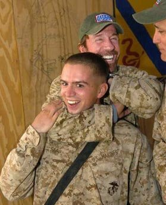
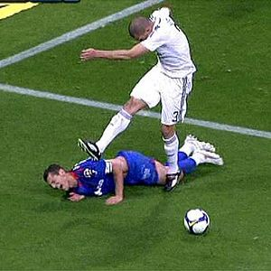
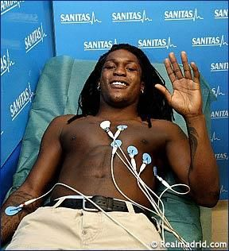
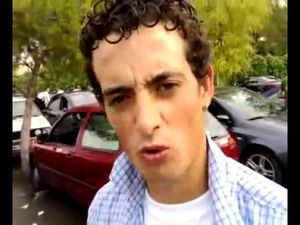

Fútalbal
 De: La Frikipedia, la enciclopedia extremadamente seria.
De: La Frikipedia, la enciclopedia extremadamente seria.
Historia
El Fútalbal comenzó el 19 de Mayo de 2010 en el patio de un instituto cualquiera, del que todos los integrantes del equipo estaban hasta los cojones cansados, decidiendo crear el Futálbal, un deporte sin ningun objetivo claro, ni los propios jugadores lo saben, se habla de satisfacer los deseos de Ronaldo como si de cual Circo Romano se tratase, otros cuentan que solo se trata de hacer
el gilipollas deporte un rato en el recreo...leyendas urbanas...
Aunque el estadio oficial es el instituto antes nombrado, se han dado casos de jugadores de Futalbal a las tantas de la noche cogiendo bolsas y señales, preparandose un encuentro, algunos en no demasiado buen estado, pero cualquier momento es bueno para entrenar.
Se está en trámites con el COI para que el Fútalbal sea deporte Olimpico en Rio 2016, los jugadores quieren llevar el deporte a las favelas, creando escuelas, aunque de momento ya están centrados en la convocatoria del mundial 2010 de Fútalbal en Lepe.
Cabe mencionar que este deporte no habría podido llegar a ser lo que es si no hubiera intervenido en uno de sus intrepidantes y electrizantes partidos el DIOS en mente y ``cuerpo´´ y señor de todos, el inconfundible e inigualable Don Valdivieso, que con una espectacular maniobra de control y remate sin mirar mientras que los otros miembros contemplabamos atónitos, sin dar crédito a lo que estaba sucediendo, se convirtió en una leyenda viva de este deporte y un modelo a seguir por los niños de todos los rincones del globo, o para cualquier subnormal forofo que deja su trabajo y se dedica a hacer sus propias pelotas de albal. Desde entonces es el encargado y máximo propietario del Fútalbal cf. Este equipo es como los Harlem Globetrotters, mejor llamados Valdem Albaltrotters.
Modalidades
 Chuck castigando a uno que pisó la pelota
- Fútalbal Classic: Es el clásico, se juega con cualquier pelota de papel Albal del que cualquiera tiene recurbierto su bocadillo, los integrantes hacen un circulo, no sin antes haber hecho el entrenamiento especifico que toque y habiendoles quedado clara la idea del abrir campo y levantar la vista,si todo lo anterior está el orden, comienza el tiki-taka. El objetivo del juego aún es algo indeciso: unos dicen que el propósito es intentar hacer el máximo de puntos pasando la pelota por debajo de las piernas de otro jugador. Otros cuentan que simplemente se trata de hacer
el subnormal deporte mientras se espera a que suene la sirena y haya que entrar a clase.
- Fútalbal Bag: En esta modalidad, se utiliza cualquier
mierda bolsa que haya por las papeleras o el suelo tenga algún miembro del equipo, se trata de que la bolsa no caiga al suelo(ya ves tu que novedad de juego), requiriendose gran habilidad entre los jugadores de la modalidad.
- Fútalbal Senior: A este solo juegan los jugadores veteranos y mas especializados, ya que el ritmo de juego es frenético, la típica bola de albal se sustituye por un veloz tapón de botella de agua, en el que solo pueden seguir el ritmo los mejores.
- Fútalbal Cóctail: Modalidad solo para
gilipollas suicidas. La pelota de albal y el tapón se sustituyen por una bola de queso de una bolsa de cóctail. El objetivo es evitar que la bola este mas de 15 segundos entera antes de que algún imbecil jugador de fútalbal la desintegre.
- Fútalbal Organic: Modalidad para novatos, para la categoria filial del Valdem Albaltrotters, la pelota de Albal se sustituye por cualquier cacho de queso/jamón/chope...que se encuentre por el suelo, es para novatos, ya que es un juego lento, ocasionado por el grip que ofrece el jamon/queso/chope...con el suelo, aumentando el rozamiento,que como todos sabemos se puede calcular con la fórmula Froz = µs Fn por lo tanto no hay problema alguno, formando una buena cantera.
 Pepe jugando al X-treme Fútalbal
- X-treme Fútalbal: Únicamente han jugado en esta categoría los más afortunados y virtuosos en el deporte. En esta ocasión, el juego tiene lugar en un campo de minas y se es provocada una lluvia ácida. La pelota reglamentaria se ve sustituida por un ladrillo de hormigón y los jugadores deben ir completamente desnudos. Entre los supervivientes a este deporte (ya prohibido) están Valdivieso, Naranjito y Batman. A Chuck Norris se le prohibió jugar debido a su afán de devorar a sus enemigos derrotados.
Equipación reglamentaria
Las últimas noticias sobre imitaciones y fraudes del fútalbal han propiciado la creación de un reglamento de mierda universal para todo jugador de fútalbal que se precie
- Balón: unos 20 centímetros de bocadillo hecho con todo el amor de madre.
- Suelo: liso o con minas subterráneas (véase modalidad X-Treme Fútalbal).
- Calzado aquí parten con una importante ventaja los que saben elevar la pelota, pues serán considerados como los jefes del equipo y los demás les
comerán la poya alabarán.
- Límites del campo: no hay límites salvo aquellos que impiden que la pelota pueda ser recogida por un jugador. En caso de echar la pelota fuera, ese jugador será apaleado hasta que venga Doraemon y lo salve.
- Duración del partido: hasta que la pelota se desintegre, momento en el cual se pasará a otra modalidad de fútalbal mencionada anteriormente.
- Número de jugadores: cualquiera que aporte una pelota. El jugador que tenga una pelota tendrá derecho a decir en cualquier momento "el balón es mío y me lo llevo a mi casa".
La cantera (la Valdía)
 Drenthe pasando el reconocimiento en Valdibebas
Dícese entre las mentes más experimentadas y entendidas del fútalbal que la clave del éxito de este deporte se debe en un 95% a la cantera y el resto a jugadores de importación, como el fichaje confirmado de Drenthe y el posible acuerdo entre los Valden y el Real Madrid para realizar el fichaje de Pepe, gran jugador para la modalidad de X-treme fútalbal.
La historia de esta cantera se remonta a principios de curso, tiempo en el que no estaba ni pensado este deporte, en el que un grupo de chavales experimentaban la formación de una ``pelota perfecta´´ para dar cuatro pases y perderla al caer por debajo del quiosco. Poco a poco más alumnos de el instituto empezaron a reunirse en los recreos para hacer un poco el gilipollas de deporte con estas maravillosas pelotas. De aquí empezaron a surgir las primeras luchas para conseguir un hueco en el circulo.
Tiempo más tarde se conformo el FÚTALBAL C.F. compuesto únicamente por jugadores del instituto (cantera), al alcanzar a un gran perfeccionamiento llegó Valdivieso y nos deleito con su juego, pasando a llamarse el equipo los Valdem Albaltrotters, que se convirtió en el primer equipo ``invencible´´ de fútalbal con todos los componentes procendentes de la Valdía.
El nombre de VALDÍA procede del honorable guiador y manager del equipo (Valdivieso) que gracias a su empeño y máxima implicación con los jugadores, ha conseguido crear este gran equipo.
Actualmente, chavales de la ESO, debido a su gran interes por empezar a practicar el fútalbal en categorías inferiores, están realizando pruebas de acceso muy rigurosas, ya que para ser jugador del Valden hay que ser una persona ``sana´´ y con un grandísimo físico.
Desde la dirección de los Valdem os deseamos suerte para pasar las pruebas.
¿Sabías que...
- tu madre jugaba al fútalbal antes que tú?
- cada tres segundos muere en el mundo un niño por no poder practicar este deporte?
- Hitler inició el Holocausto porque un judío le ganó al fútalbal?
- Irene Villa no puede jugar?
- que me cago en El de las Gafas?
- es el primer artículo en el que todavía no se había nombrado a El Fary?
- me vas a comer los huevos por detrás???
- en "El Sexto Sentido" los protagonistas están muertos?
- el fútalbal no tiene nada que ver con el [1]?
- te estoy penetrando ahora?
- te esta gustando?
- mucho?
- Charles Barkley era conocido como el gordo Barkley?
- la mayoria de tetraplejicos, paraplejicos... son exjugadores de fútalbal?
- se lo mereceeee, se lo mereceeee?
- por maricona se lo merece?
- Irene Villa hace trompos con su silla?
- Un día Jesucristo se encontró a Irene Villa y le dijo: "Levántate y and... bah, no, déjalo".
Frases Célebres
 Chuky de cieza declara en público que nunca había visto un equipo tan magnífico y lo calificó como el ``dreamteam´´
- "Cambio,cambio!" Jugador de Fútalbal lesionado.
- "v8492@|~€dg¬&%df@fh5352!!! al banquillo!" Jugadores de Fútalbal gritando al que acaba de pisar la pelota.
- "EEEHEHEEYEEEHEEHEEEE!!!!" Jugadores de Fútalbal cuando les ha salido algo
de chorra impresionante.
- "EEEHEHEEYEEEHEEHEEEE!!!!" (2) Jugadores de fútalbal cuando elevan la pelota
- "Ahí vaaa!!"Frase muy utilizada por los jugadores profesionales de este deporte cuando toca la pelota o cuando no se le escapa, todo esto seguido de su risa de emoción por la que nuestros sponsors ingleses creían que era ``retarded´´.
- "¡Cómo
se la eleva!" Jugador de Fútalbal excitado.
- "¡UYUYUNOOOYUYUNONONYYUOONOYUUYUYUYU!" Jugadores de Fútalbal preocupados mientras un grupo de gente pasa por encima de la pelota, casi aplastandola..
- No la pises !! ,antes de una paliza inminente
- NOOOOOOOOOOOOOOOOO !!!!!! Jugadores de Futalbal antes de que se pise la bola
- Comprime la bola tio!!! cuando después de un pisotón alguien intenta arreglar la bola
↑ furbo
Autor(es):
- GPCompeticion
- Karlosatila
- ADrIaN1996
- Dancob
- Futalbal
Frikipedia 2005-2016, Licencia
GFDL 1.2 - Extraído por FrikiLeaks